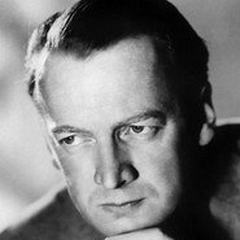

1910'lar – 1980'ler
İskandinav Sineması
İsveç'in sessiz dönem altın çağından Bergman'a, sert manzaralara, ahlaki drama ve psikolojik derinliğe dayanan bir gelenek.
İskandinavya sinemaya iki altın çağ verdi. 1910'larda ve 1920'lerde Victor Sjöström ve Mauritz Stiller çarpıcı manzaralar ve ruhsal derinlikle filmler yaptı, Danimarka'da Carl Theodor Dreyer yüzleri ve sessizliği dramaya dönüştürdü. Savaştan sonra Ingmar Bergman, yakın bir oyuncu çevresiyle ve görüntü yönetmeni Sven Nykvist ile çalışarak İsveç sinemasını inanç, ölüm ve aşk sorularına bir sahneye çevirdi. Dogme 95 ile ve Lars von Trier ile Thomas Vinterberg gibi yönetmenlerle gelen sonraki kuşak kuralları yeniden yıktı; bugün Kuzey Avrupa sineması sade sanat filminden karanlık polisiye dramaya uzanır.
- Nerede
- İsveç, Danimarka, Norveç ve Finlandiya
- Ne zaman
- 1910'lardan 1980'lere; 1990'lardan itibaren yeni bir canlanma
- Önemli isimler
- Victor Sjöström, Mauritz Stiller, Carl Theodor Dreyer, Ingmar Bergman, Bo Widerberg, Jan Troell
- Başyapıtlar
- Hayalet Araba (1921), Jeanne d'Arc'ın Tutkusu (1928), Yedinci Mühür (1957), Persona (1966)
- Miras
- Kişisel, felsefi sanat filminin ölçütünü belirledi
Nelere bakmalı
- Sade, yoğun görüntüler ve yüzlerin uzun yakın çekimleri
- İnanç, suçluluk, ölüm ve ilişki soruları
- Doğanın ve kuzey ışığının güçlü kullanımı
Ünlü Yönetmenler
 Victor Sjöströmİsveç
Victor Sjöströmİsveç Benjamin ChristensenDanimarka
Benjamin ChristensenDanimarka Carl Theodor DreyerDanimarka
Carl Theodor DreyerDanimarka Ingmar BergmanİsveçAki KaurismäkiFinlandiyaMauritz Stillerİsveç (Finlandiya doğumlu)Ruben ÖstlundİsveçBo WiderbergİsveçJan TroellİsveçRoy AnderssonİsveçBille AugustDanimarka
Ingmar BergmanİsveçAki KaurismäkiFinlandiyaMauritz Stillerİsveç (Finlandiya doğumlu)Ruben ÖstlundİsveçBo WiderbergİsveçJan TroellİsveçRoy AnderssonİsveçBille AugustDanimarka
Alf Sjöbergİsveç Dag Johan HaugerudNorveçBodil IpsenDanimarkaArne MattssonİsveçMay el-ToukhyDanimarka (Mısır asıllı Danimarkalı)Lau Lauritzen Jr.DanimarkaThomas VinterbergDanimarkaLukas Moodyssonİsveç
Dag Johan HaugerudNorveçBodil IpsenDanimarkaArne MattssonİsveçMay el-ToukhyDanimarka (Mısır asıllı Danimarkalı)Lau Lauritzen Jr.DanimarkaThomas VinterbergDanimarkaLukas Moodyssonİsveç Joachim TrierNorveç
Joachim TrierNorveçEn iyi filmler · 157 film
- Scenes from a Marriage 1973 · Ingmar Bergman · IMDb 8,3
- The Hunt (2012) 2012 · Thomas Vinterberg · IMDb 8,3
- Ordet 1955 · Carl Theodor Dreyer · IMDb 8,2
- The Passion of Joan of Arc 1928 · Carl Theodor Dreyer · IMDb 8,1
- The Seventh Seal 1957 · Ingmar Bergman · IMDb 8,1
- Wild Strawberries 1957 · Ingmar Bergman · IMDb 8,1
- Autumn Sonata 1978 · Ingmar Bergman · IMDb 8,1
- Fanny and Alexander 1982 · Ingmar Bergman · IMDb 8,1
- The Phantom Carriage 1921 · Victor Sjöström · IMDb 8,0
- The Wind 1928 · Victor Sjöström · IMDb 8,0
- Day of Wrath 1943 · Carl Theodor Dreyer · IMDb 8,0
- The Virgin Spring 1960 · Ingmar Bergman · IMDb 8,0
- Winter Light 1963 · Ingmar Bergman · IMDb 8,0
- Persona 1966 · Ingmar Bergman · IMDb 8,0
- Shame 1968 · Ingmar Bergman · IMDb 8,0
- The Emigrants 1971 · Jan Troell · IMDb 8,0
- The New Land 1972 · Jan Troell · IMDb 8,0
- The Celebration 1998 · Thomas Vinterberg · IMDb 8,0
- Through a Glass Darkly 1961 · Ingmar Bergman · IMDb 7,9
- Cries and Whispers 1972 · Ingmar Bergman · IMDb 7,9
- Lilya 4-ever 2002 · Lukas Moodysson · IMDb 7,8
- He Who Gets Slapped 1924 · Victor Sjöström · IMDb 7,7
- Smiles of a Summer Night 1955 · Ingmar Bergman · IMDb 7,7
- The Silence 1963 · Ingmar Bergman · IMDb 7,7
- Pelle the Conqueror 1987 · Bille August · IMDb 7,7
- The Best Intentions 1992 · Bille August · IMDb 7,7
- Another Round 2020 · Thomas Vinterberg · IMDb 7,7
- The Worst Person in the World 2021 · Joachim Trier · IMDb 7,7
- Sentimental Value 2025 · Joachim Trier · IMDb 7,7
- Häxan 1922 · Benjamin Christensen · IMDb 7,6
- The Scarlet Letter 1926 · Victor Sjöström · IMDb 7,6
- The Passion of Anna 1969 · Ingmar Bergman · IMDb 7,6
- The Man Without a Past 2002 · Aki Kaurismäki · IMDb 7,6
- Drifting Clouds 1996 · Aki Kaurismäki · IMDb 7,6
- Oslo, August 31st 2011 · Joachim Trier · IMDb 7,6
- Summer Interlude 1951 · Ingmar Bergman · IMDb 7,5
- Summer with Monika 1953 · Ingmar Bergman · IMDb 7,5
- The Magician 1958 · Ingmar Bergman · IMDb 7,5
- Hour of the Wolf 1968 · Ingmar Bergman · IMDb 7,5
- Face to Face 1976 · Ingmar Bergman · IMDb 7,5
- The Match Factory Girl 1990 · Aki Kaurismäki · IMDb 7,5
- La Vie de Bohème 1992 · Aki Kaurismäki · IMDb 7,5
- Songs from the Second Floor 2000 · Roy Andersson · IMDb 7,5
- Submarino 2010 · Thomas Vinterberg · IMDb 7,5
- Show Me Love 1998 · Lukas Moodysson · IMDb 7,5
- Vampyr 1932 · Carl Theodor Dreyer · IMDb 7,4
- Sawdust and Tinsel 1953 · Ingmar Bergman · IMDb 7,4
- Everlasting Moments 2008 · Jan Troell · IMDb 7,4
- Les Misérables (1998) 1998 · Bille August · IMDb 7,4
- Shadows in Paradise 1986 · Aki Kaurismäki · IMDb 7,4
- Ariel 1988 · Aki Kaurismäki · IMDb 7,4
- You, the Living 2007 · Roy Andersson · IMDb 7,4
- Together (2000) 2000 · Lukas Moodysson · IMDb 7,4
- Terje Vigen 1917 · Victor Sjöström · IMDb 7,3
- Gertrud 1964 · Carl Theodor Dreyer · IMDb 7,3
- Brink of Life 1958 · Ingmar Bergman · IMDb 7,3
- Raven's End 1963 · Bo Widerberg · IMDb 7,3
- Twist and Shout 1985 · Bille August · IMDb 7,3
- Reprise 2006 · Joachim Trier · IMDb 7,3
- The Outlaw and His Wife 1918 · Victor Sjöström · IMDb 7,2
- Torment 1944 · Alf Sjöberg · IMDb 7,2
- Joe Hill 1971 · Bo Widerberg · IMDb 7,2
- The Man on the Roof 1976 · Bo Widerberg · IMDb 7,2
- Hamsun 1996 · Jan Troell · IMDb 7,2
- Le Havre 2011 · Aki Kaurismäki · IMDb 7,2
- The Other Side of Hope 2017 · Aki Kaurismäki · IMDb 7,2
- Fallen Leaves 2023 · Aki Kaurismäki · IMDb 7,2
- Force Majeure 2014 · Ruben Östlund · IMDb 7,2
- Triangle of Sadness 2022 · Ruben Östlund · IMDb 7,2
- Sir Arne's Treasure 1919 · Mauritz Stiller · IMDb 7,1
- The Parson's Widow 1920 · Carl Theodor Dreyer · IMDb 7,1
- Michael 1924 · Carl Theodor Dreyer · IMDb 7,1
- To Joy 1950 · Ingmar Bergman · IMDb 7,1
- The Devil's Eye 1960 · Ingmar Bergman · IMDb 7,1
- Miss Julie 1951 · Alf Sjöberg · IMDb 7,1
- Goodbye Bafana 2007 · Bille August · IMDb 7,1
- I Hired a Contract Killer 1990 · Aki Kaurismäki · IMDb 7,1
- The Square 2017 · Ruben Östlund · IMDb 7,1
- Play 2011 · Ruben Östlund · IMDb 7,1
- Beware of Children 2019 · Dag Johan Haugerud · IMDb 7,1
- Far from the Madding Crowd 2015 · Thomas Vinterberg · IMDb 7,1
- We Are the Best! 2013 · Lukas Moodysson · IMDb 7,1
- The Divine Woman 1928 · Victor Sjöström · IMDb 7,0
- The Saga of Gösta Berling 1924 · Mauritz Stiller · IMDb 7,0
- Master of the House 1925 · Carl Theodor Dreyer · IMDb 7,0
- Secrets of Women 1952 · Ingmar Bergman · IMDb 7,0
- A Lesson in Love 1954 · Ingmar Bergman · IMDb 7,0
- Dreams 1955 · Ingmar Bergman · IMDb 7,0
- The Rite 1969 · Ingmar Bergman · IMDb 7,0
- Elvira Madigan 1967 · Bo Widerberg · IMDb 7,0
- Ådalen 31 1969 · Bo Widerberg · IMDb 7,0
- Crime and Punishment 1983 · Aki Kaurismäki · IMDb 7,0
- Leningrad Cowboys Go America 1989 · Aki Kaurismäki · IMDb 7,0
- Queen of Hearts 2019 · May el-Toukhy · IMDb 7,0
- The Temptress 1926 · Mauritz Stiller · IMDb 6,9
- The House of the Spirits 1993 · Bille August · IMDb 6,9
- Involuntary 2008 · Ruben Östlund · IMDb 6,9
- A Pigeon Sat on a Branch Reflecting on Existence 2014 · Roy Andersson · IMDb 6,9
- Thelma 2017 · Joachim Trier · IMDb 6,9
- The Devil's Circus 1926 · Benjamin Christensen · IMDb 6,8
- Mockery 1927 · Benjamin Christensen · IMDb 6,8
- The Island 1966 · Alf Sjöberg · IMDb 6,8
- One Summer of Happiness 1951 · Arne Mattsson · IMDb 6,8
- All Things Fair 1995 · Bo Widerberg · IMDb 6,8
- Night Train to Lisbon 2013 · Bille August · IMDb 6,8
- Hamlet Goes Business 1987 · Aki Kaurismäki · IMDb 6,8
- Juha 1999 · Aki Kaurismäki · IMDb 6,8
- Lights in the Dusk 2006 · Aki Kaurismäki · IMDb 6,8
- About Endlessness 2019 · Roy Andersson · IMDb 6,8
- Woman Unknown 2026 · May el-Toukhy · IMDb 6,8
- Mammoth 2009 · Lukas Moodysson · IMDb 6,8
- The Girl from the Marsh Croft 1917 · Victor Sjöström · IMDb 6,7
- Hotel Imperial 1927 · Mauritz Stiller · IMDb 6,7
- Prison 1949 · Ingmar Bergman · IMDb 6,7
- Only a Mother 1949 · Alf Sjöberg · IMDb 6,7
- The Doll (1962) 1962 · Arne Mattsson · IMDb 6,7
- The Red Meadows 1945 · Bodil Ipsen · IMDb 6,7
- Seven Footprints to Satan 1929 · Benjamin Christensen · IMDb 6,6
- Leaves from Satan's Book 1921 · Carl Theodor Dreyer · IMDb 6,6
- It Rains on Our Love 1946 · Ingmar Bergman · IMDb 6,6
- Port of Call 1948 · Ingmar Bergman · IMDb 6,6
- The Serpent's Egg 1977 · Ingmar Bergman · IMDb 6,6
- Kursk 2018 · Thomas Vinterberg · IMDb 6,6
- Louder Than Bombs 2015 · Joachim Trier · IMDb 6,6
- Two People 1945 · Carl Theodor Dreyer · IMDb 6,5
- Thirst 1949 · Ingmar Bergman · IMDb 6,5
- Dear Wendy 2005 · Thomas Vinterberg · IMDb 6,5
- Crisis 1946 · Ingmar Bergman · IMDb 6,4
- Music in Darkness 1948 · Ingmar Bergman · IMDb 6,4
- Zandy's Bride 1974 · Jan Troell · IMDb 6,4
- The Commune 2016 · Thomas Vinterberg · IMDb 6,4
- Erotikon 1920 · Mauritz Stiller · IMDb 6,3
- The Touch 1971 · Ingmar Bergman · IMDb 6,3
- Barabbas 1953 · Alf Sjöberg · IMDb 6,3
- Smilla's Sense of Snow 1997 · Bille August · IMDb 6,3
- Giliap 1975 · Roy Andersson · IMDb 6,3
- Salka Valka 1954 · Arne Mattsson · IMDb 6,1
- Bang! 1977 · Jan Troell · IMDb 5,7
- Fimpen 1974 · Bo Widerberg · IMDb 5,6
- All These Women 1964 · Ingmar Bergman · IMDb 5,4
- It's All About Love 2003 · Thomas Vinterberg · IMDb 5,3
- This Can't Happen Here 1950 · Ingmar Bergman · IMDb 5,0
- Container 2006 · Lukas Moodysson · IMDb 4,8
- A Hole in My Heart 2004 · Lukas Moodysson · IMDb 4,4
- Dreams (Sex Love) 2024 · Dag Johan Haugerud
- I Belong 2015 · Dag Johan Haugerud
- Thomas Graal's Best Film 1917 · Mauritz Stiller
- Gunnar Hede's Saga 1923 · Mauritz Stiller
- Sons of Ingmar 1919 · Victor Sjöström
- Here's Your Life 1966 · Jan Troell
- Night of Revenge 1916 · Benjamin Christensen
- A Swedish Love Story 1970 · Roy Andersson
- The Mysterious X 1914 · Benjamin Christensen
- A Ship Bound for India 1947 · Ingmar Bergman
- Karin Daughter of Ingmar 1920 · Victor Sjöström
- Take Care of Your Scarf, Tatjana 1994 · Aki Kaurismäki
- The True Face 1951 · Lau Lauritzen Jr.